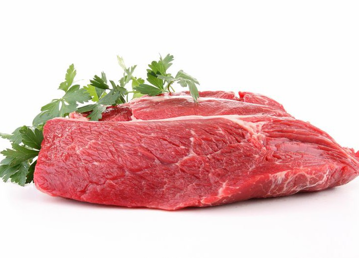

Говя́дина, говяжье мясо — мясо домашних коров и быков (волов). Мясо молодняка называется телятина. В западноевропейской кулинарии строго различают мясо коров, быков и волов. В России это общее понятие[1]. Люди ели говядину с доисторических времен[2]. Говядина является источником высококачественного белка и питательных веществ[3]
вернутся на главную попасть в временую петлю 